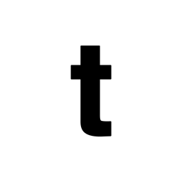

디스이즈네버댓 thisisneverthat
디스이즈네버댓(thisisneverthat)은 2010년 서울에서 시작된 한국의 스트리트웨어 브랜드이다.
최종 업데이트

디스이즈네버댓은 어떤 브랜드인가
디스이즈네버댓(thisisneverthat)은 2010년 세 명의 팀으로 론칭했다. '스포츠 앤 스트릿'을 콘셉트로 1990년대 스포츠웨어·밀리터리 무드를 현대적으로 재해석하며 다수 글로벌 브랜드와 협업해왔다.
디스이즈네버댓은 어떻게 봐야 할까
제품·서비스 범위, 유통 방식, 시각 아이덴티티, 시장 포지션을 함께 비교하면 같은 산업의 다른 브랜드와 차이가 선명해집니다.
디스이즈네버댓은 어떻게 시작되고 성장했나
디스이즈네버댓은 2010년 서울에서 시작한 한국 스트리트웨어 브랜드다. 최종규, 박인욱을 비롯한 창업자들이 스포츠와 스트리트를 결합한 콘셉트로 론칭했으며, 1990년대 스포츠웨어와 밀리터리 무드, 스케이트·언더그라운드 문화를 토대로 옷을 만들었다.
초기에는 서울의 크리에이터들 사이에서 입소문을 타며 자리 잡았고, 2018년 패션위크 데뷔를 계기로 인지도가 빠르게 넓어졌다. 이후 엔드클로딩, 쎈스 같은 해외 온라인 편집숍에 입점하고 도쿄 플래그십 스토어를 여는 등 글로벌 시장으로 영역을 확장했으며, 유럽에는 유통 계약을 통해 진출했다.
모기업 매출은 2020년 약 234억원에서 2023년 약 567억원으로 성장했고, 2021년에는 무신사가 해외 홀세일을 담당해 온 에이전시에 전략적으로 투자하면서 해외 판로 확대의 발판을 마련했다.
디스이즈네버댓의 브랜드 아이덴티티는 무엇인가
90년대 스포츠·밀리터리 무드를 현대화한 서울 기반 스트리트웨어 브랜드다.
디스이즈네버댓은 지금 어떤 상태인가
산업: 패션·럭셔리
디스이즈네버댓 로고는 어떻게 변해왔나
자주 묻는 질문
디스이즈네버댓는 어느 나라 브랜드인가요?
디스이즈네버댓는 한국의 패션·럭셔리 브랜드입니다.
디스이즈네버댓는 언제 설립되었나요?
디스이즈네버댓는 2010년 설립되었습니다.
디스이즈네버댓의 브랜드 아이덴티티는 무엇인가요?
90년대 스포츠·밀리터리 무드를 현대화한 서울 기반 스트리트웨어 브랜드다.
디스이즈네버댓는 현재 어떤 상태인가요?
산업: 패션·럭셔리
디스이즈네버댓의 본사는 어디에 있나요?
디스이즈네버댓의 본사는 서울특별시에 있습니다(위키데이터 기준).
디스이즈네버댓의 공식 웹사이트는 어디인가요?
디스이즈네버댓의 공식 웹사이트는 https://thisisneverthat.com/ 입니다.
출처와 검증
디스이즈네버댓 관련 참고: 공식 웹사이트 · 위키데이터 Q107394173. 브랜드명은 한글과 원어를 함께 표기하되 데이터에 없는 표기는 만들지 않습니다. 기원 국가·설립연도는 검수된 정의문에서 확인된 값을 우선하고, 없을 때만 공식 웹사이트 URL이 일치하는 위키데이터 개체의 값을 씁니다. 위키데이터 값은 2026-09-07 기준입니다.